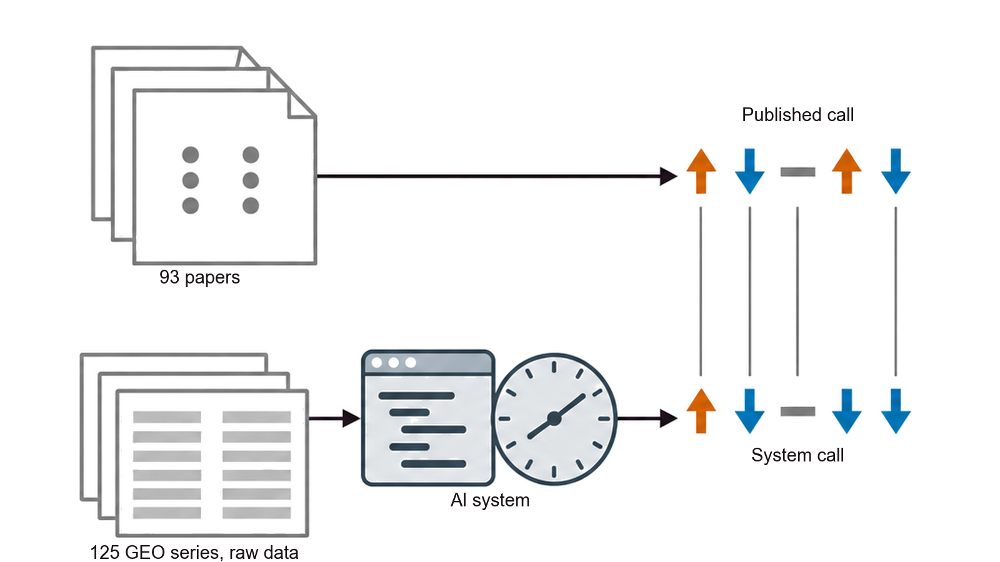

Can an AI system recover published aging-clock effects from raw data?
AgingAgentBench measures whether an analysis system recovers aging-clock effects reported in published studies of public GEO data. The published-effects dataset contains 580 effects from 93 papers on 125 GEO series.
Leaderboard
(95% CI)Decreasesof 16 publishedIncreasesof 36 publishedNo significant differenceof 58 published
All systems are evaluated on a shared set of 110 records drawn from 32 papers. Model baselines read study descriptions and group definitions, with no access to sample data or external tools. The constant rule always answers higher.
ClockBase analysis variants
GPT-6 Astra and GPT-6 Sol assigned the published groups, and the primary result uses released tests.
(95% CI)Decreasesof 16 publishedIncreasesof 36 publishedNo significant differenceof 58 published
Claude models were evaluated through the Anthropic API on 17 November 2026 with medium effort, a 4096 output-token limit, one run per request and no tools.
Claude evaluation details
Responses were parsed with the original S4 parser. A single valid JSON answer embedded in prose was extracted with its values unchanged, and one incomplete Fable 5.1 response that stopped during auxiliary metadata was scored on its fully returned prediction and significance fields, with no fields inferred and no repeat request; sensitivity results are in the downloadable evaluation JSON.
Agent reruns
| System | Published-call agreement (95% CI) | n | Direction matches |
|---|---|---|---|
| Codex with GPT-6 Astra | 82.86% 69.81% to 93.48% | 70 | 25/27 |
| Codex with GPT-6 Sol | 90.28% 81.16% to 97.53% | 72 | 25/27 |
| Codex with GPT-6 Luna | 77.33% 62.96% to 89.14% | 75 | 27/30 |
| Codex with GPT-5.5 | 79.27% 66.67% to 89.80% | 82 | 32/34 |
| Claude Code with Claude Opus 5.5 | 82.76% 71.74% to 92.54% | 87 | 35/37 |
| Biomni with GPT-6 Astra | 80.88% 67.27% to 92.75% | 68 | 24/26 |
Intervals resample papers. Direction matches use published significant results. Agent rerun JSON
Expert annotation agreement
| Modality | Arm orientation | Agreement | Matches |
|---|---|---|---|
| Mouse RNA-seq | Confirmed orientation | 98.85% | 86/87 |
| Mouse RNA-seq | All orientations | 98.88% | 88/89 |
| Human DNA methylation | Confirmed orientation | 98.37% | 121/123 |
| Human DNA methylation | All orientations | 96.32% | 157/163 |
Final candidate calls are compared with calls from complete expert-defined groups, using the same clock outputs and test rules. Expert agreement JSON
The task
- Inputs
- Public GEO molecular data and sample annotation.
- Study description, case and control groups, clock, and measure.
- Answer-free task records with a preserved
record_id.
- Returns
higher,lower, ornot significant.- Optional direction and P value for direction AUROC.
- Optional signed effect with units for effect-size scoring.

Compare the case group with the control group using the specified clock and measure. Use the paper's significance threshold, or P < 0.05 when it states none. Balanced accuracy scores the mean recall of the published classes present. Missing predictions are abstentions; coverage and metric denominators are reported. Keep reference outcomes in the scoring environment.
Use it
python3 -m venv .venv
source .venv/bin/activate
python -m pip install -e '.[test]'
agingagentbench score \
--predictions reference_results/clockbase_paper_groups.csv \
--cohort main110Install from a local checkout of the repository. Submit predictions with the task identifiers and calls. Prediction format and scoring options
Data
The published-effects dataset contains 580 contrasts from 93 papers on 125 GEO series. The reference is what each paper reports for its clock, measure, and groups.
Task recordsReference predictionsSupplementary source tableData provenance
License
Code is licensed under MIT. The data compilation and numerical outputs use CC BY 4.0.
Data reuse terms
The AgingAgentBench data compilation and ClockBase numerical outputs are licensed under the Creative Commons Attribution 4.0 International license CC BY 4.0. Attribute AgingAgentBench to Ying K, et al. and cite the ClockBase preprint DOI 10.1101/2023.02.28.530532. Retain each record's source identifiers when redistributing or using published contrasts and identify changes you make.
Evidence quotations come from the cited papers. Their copyright remains with their respective rights holders; the compilation does not relicense those quotations or the papers themselves.
data/expert/human_dnam_groups.jsonl and data/expert/human_dnam_samples.jsonl derive from ComputAgeBench and retain CC BY-SA 4.0. Attribution, source revision, and modifications are documented in the expert annotation notes. This file-specific license overrides CC BY 4.0 for those derivatives.
data/expert/mouse_rna_groups.jsonl contains factual group definitions and GSM lists derived from Tyshkovskiy et al., Nature 2026, DOI 10.1038/s41586-026-10542-3, Zenodo record 18763485. The record states a license for clock models and software and none for the annotation. The repository ships these derived rules and lists with attribution and does not redistribute the original workbook. The compilation license does not relicense the source annotation. The separately generated benchmark calls and parsed reference predictions are included in the CC BY 4.0 compilation.
Citation
Ying K, et al. Autonomous AI Agents Discover Aging Interventions from Millions of Molecular Profiles. bioRxiv (2025). 10.1101/2023.02.28.530532